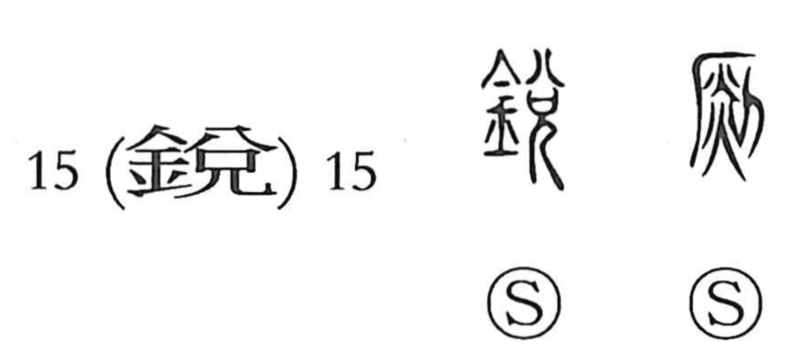

影

Kun: kage | On: ei
shadow ・ reflection ・ image
Explanation
影 is a compound of 景 and 彡. In 景, the element 京 depicts an arched fortress gate, the sort of structure used like a gnomon to read the sun’s shadow and thus measure time; 景 therefore points to the gauging of sunlight. The added 彡 is a sign used to suggest the shimmering beauty or luster of light, sound, form, and color. Joined together, they evoke a figure revealed by light yet half-concealed—a shape cast or mirrored—giving the sense of an image in light and, in particular, a shadow (kage).